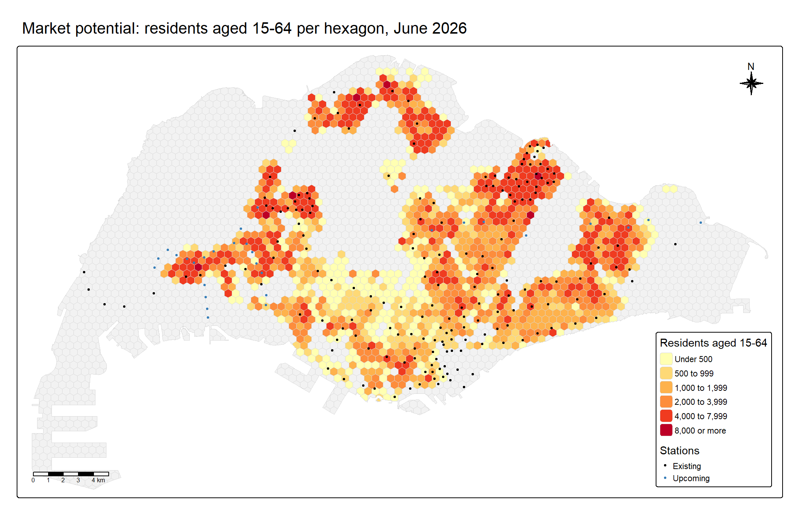

pacman::p_load(sf, tidyverse, readxl, httr2, jsonlite, MCI,
tmap, knitr, kableExtra)03: Geospatial Analytics for Urban Sustainability
1. Introduction and Study Context
Urban Rail Transit (URT) is central to sustainable urban development. By moving large numbers of people quickly and reliably, it supports transit-oriented development, reduces road congestion and connects residents to jobs, services and education. In Singapore, the Mass Rapid Transit (MRT) system has been the backbone of public transport since 1987. As of 2024, the network had 143 stations across six lines and about 242.6 km of track, carrying an average of 3.41 million passengers a day.
Expanding the network carries a planning risk. Stations are often built ahead of demand to avoid future disruption and cost, but a station that opens before its catchment has developed incurs operating costs with few riders. Hume station’s structural shell was completed in 2015, but the station opened only on 28 February 2025, a decade after Downtown Line Stage 2 began operating. Buangkok and Woodleigh stations remained closed when the North East Line opened in 2003 because the projected passenger volumes did not justify their operating costs. Such decisions depend on estimating a station’s catchment and predicting its ridership before it opens.
Two new lines will add 36 stations by 2030: the Jurong Region Line (JRL, 24 stations) and Phase 1 of the Cross Island Line (CRL, 12 stations). New stations also compete with existing ones. Residents who live between an existing and a new station may switch, so the new lines can reduce ridership at existing stations as well as add their own.
Probabilistic spatial interaction models address this question directly. The Huff model estimates the probability that a resident at a given location uses each station, based on the station’s attractiveness and the distance to it, relative to all competing stations (Huff, 1964). Zhu et al. (2021) applied an improved Huff model to estimate URT station catchments in Xi’an, measuring station attractiveness through walkability, public transport accessibility and service quality. However, they adopted the distance-decay and attractiveness parameters from the literature and from expert ratings rather than calibrating them, and noted this as their main limitation. This exercise calibrates the model parameters against observed station ridership in Singapore, using the Multiplicative Competitive Interaction (MCI) model, the calibratable form of the Huff model (Nakanishi & Cooper, 1974).
2. Research Objectives and Questions
2.1 Research Objectives
This exercise develops an analytical framework for station-level ridership prediction to:
- Calibrate a probabilistic spatial interaction model for station-level ridership estimation.
- Predict the potential ridership of the proposed JRL and CRL Phase 1 stations.
- Evaluate the potential impact of the new stations on the ridership and market areas of existing stations.
2.2 Research Questions
- RQ1: How well does a calibrated probabilistic spatial interaction model explain the observed weekday morning-peak ridership of existing MRT and LRT stations, and which station attributes matter beyond distance?
- RQ2: What ridership can be expected at the 36 proposed JRL and CRL Phase 1 stations, and which stations are at risk of low ridership?
- RQ3: How will the new stations redistribute the market areas and ridership of existing stations?
2.3 Model Components
| Component | Definition in this exercise | Data |
|---|---|---|
| Origins | Hexagonal grid cells covering mainland Singapore | Created in this exercise |
| Market potential | HDB residents aged 15–64 in each hexagon, June 2026 | SingStat population by subzone, HDB Property Information, HDB Existing Building |
| Destinations | Existing MRT/LRT stations, and existing plus proposed stations | LTA Train Station, URA Master Plan 2025 Rail Station |
| Observed ridership | Average weekday tap-ins between 7am and 9am, July–September 2026 | LTA Passenger Volume by Origin Destination Train Stations |
| Attractiveness | Candidate station attributes, such as nearby points of interest, bus interchanges and bus stops, and the number of lines served | OpenStreetMap, LTA Bus Stop |
| Distance | Straight-line distance from each hexagon to each station, in metres | Computed in this exercise |
Market potential is defined as HDB residents aged 15 to 64, covering the secondary-school, tertiary and working-age groups that make up most weekday morning-peak MRT trips. Children under 15 are excluded because most travel to nearby primary schools on foot or by school bus. Residents aged 65 and over are excluded because their trips are less concentrated in the morning peak.
3. Getting Started
3.1 Installing R Packages
| Package | Purpose in this exercise |
|---|---|
| sf | Import, reproject, validate and process geospatial data |
| tidyverse | Import CSV files, data cleaning, joins and aggregation |
| readxl | Import the SingStat population workbook (.xlsx) |
| httr2, jsonlite | Download the passenger volume data from the LTA DataMall API (Section 3.4) |
| MCI | Calibrate the MCI model and compute Huff probabilities |
| tmap (version 4) | Thematic maps |
| knitr, kableExtra | Tables |
p_load() of pacman installs any package that is missing and then loads all of them. The map code in this report uses tmap version 4 syntax (for example, fill = instead of col =), so tmap 4.0 or later is required.
3.2 Project Structure
All file paths in this report are relative to the Quarto project folder, so the code runs on any computer once the data are placed in the same structure:
Take-Home_Ex03/
├── Take-Home_Ex03.qmd
├── data/
│ ├── geospatial/ # boundary, land use, buildings, stations, bus stops, OSM POIs
│ └── aspatial/ # passenger volume CSVs, station codes, HDB properties, population3.3 Datasets
| Dataset | Source | Format | Version / period | Use in this exercise |
|---|---|---|---|---|
| Master Plan 2019 Subzone Boundary (No Sea) | data.gov.sg (URA) | GeoJSON | MP2019 | Study boundary; link to population by subzone |
| Master Plan 2019 Land Use | data.gov.sg (URA) | GeoJSON, 113,213 polygons | MP2019 | Locating residents in private housing |
| HDB Property Information | data.gov.sg (HDB) | GeoJSON, 13,436 footprints | Updated to 2026 | Locating HDB blocks |
| Master Plan 2025 Rail Station | data.gov.sg (URA) | GeoJSON, 272 polygons | MP2025 | Locations of the proposed JRL and CRL stations |
| Train Station | LTA DataMall | Shapefile, 234 polygons | September 2026 | Locations of existing stations |
| Bus Stop Location | LTA DataMall | Shapefile, 5,205 points | September 2026 | Station attractiveness (bus access) |
| OpenStreetMap points of interest | Geofabrik, Malaysia, Singapore and Brunei extract | Shapefiles: points and polygons | Downloaded in October 2026 | Station attractiveness (nearby activities) |
| Passenger Volume by Origin Destination Train Stations | LTA DataMall API | CSV, one file per month | July-September 2026 | Observed station ridership |
| Train Station Codes and Chinese Names | data.gov.sg | CSV, 184 codes | December 2015 | Linking passenger volume codes to station names |
| HDB Property Information | data.gov.sg (HDB) | CSV, 13,392 blocks | 2025 | Residential flag and dwelling units per block |
| Singapore Residents by Planning Area/Subzone, Age Group, Sex and Type of Dwelling | SingStat | Excel workbook | June 2026 | Market potential (residents aged 15–64) |
3.4 Downloading the Passenger Volume Data
Unlike the other datasets, the passenger volume data cannot be downloaded directly from a web page. It is served through the LTA DataMall API, which requires an Account Key. To reproduce this step, request an Account Key at the LTA DataMall API request page. The key is sent by email.
DataMall only provides the three most recent months. The July to September 2026 files will therefore no longer be available from the API after December 2026.
3.5 Importing Geospatial Data
The eight geospatial datasets are imported with st_read(). GeoJSON files are read by file path. Shapefiles are read by folder (dsn) and layer name, because a shapefile consists of several files (.shp, .shx, .dbf, .prj) that must sit together in the same folder.
mpsz_raw <- st_read("data/geospatial/MasterPlan2019SubzoneBoundaryNoSeaGEOJSON.geojson", quiet = TRUE)
landuse_raw <- st_read("data/geospatial/MasterPlan2019LandUselayer.geojson", quiet = TRUE)
hdb_bldg_raw <- st_read("data/geospatial/HDBExistingBuilding.geojson", quiet = TRUE)
mp25_stn_raw <- st_read("data/geospatial/MasterPlan2025RailStationLayer.geojson", quiet = TRUE)
rts_raw <- st_read(dsn = "data/geospatial/RapidTransitSystemStation", layer = "RapidTransitSystemStation", quiet = TRUE)
busstop_raw <- st_read(dsn = "data/geospatial/BusStopLocation_Sep2026", layer = "BusStop", quiet = TRUE)
poi_pt_raw <- st_read(dsn = "data/geospatial/gis_osm_pois", layer = "gis_osm_pois_free_1", quiet = TRUE)
poi_poly_raw <- st_read(dsn = "data/geospatial/gis_osm_pois", layer = "gis_osm_pois_a_free_1", quiet = TRUE)To check all eight layers at once, the code chunk below summarises each layer’s number of features, geometry type, whether it carries a Z (height) dimension, its coordinate reference system (CRS) and its number of invalid geometries.
NoteAI Use Disclosure
AI tools were used to draft the R code that summarises the eight layers into a single table using imap() and list_rbind(). The output was reviewed and run by the author to verify correctness against the study data.
geo_layers <- list(mpsz_raw = mpsz_raw, landuse_raw = landuse_raw,
hdb_bldg_raw = hdb_bldg_raw, mp25_stn_raw = mp25_stn_raw,
rts_raw = rts_raw, busstop_raw = busstop_raw,
poi_pt_raw = poi_pt_raw, poi_poly_raw = poi_poly_raw)
imap(geo_layers, \(x, name) tibble(
layer = name,
features = nrow(x),
geometry = paste(unique(as.character(st_geometry_type(x))), collapse = ", "),
has_z = !is.null(st_z_range(x)),
crs = st_crs(x)$Name,
epsg = st_crs(x)$epsg,
invalid = sum(!st_is_valid(x), na.rm = TRUE)
)) %>%
list_rbind() %>%
kable()| layer | features | geometry | has_z | crs | epsg | invalid |
|---|---|---|---|---|---|---|
| mpsz_raw | 332 | MULTIPOLYGON | FALSE | WGS 84 | 4326 | 6 |
| landuse_raw | 113213 | MULTIPOLYGON | FALSE | WGS 84 | 4326 | 3 |
| hdb_bldg_raw | 13436 | MULTIPOLYGON | FALSE | WGS 84 | 4326 | 4 |
| mp25_stn_raw | 272 | MULTIPOLYGON | FALSE | WGS 84 | 4326 | 0 |
| rts_raw | 234 | MULTIPOLYGON | FALSE | SVY21 | NA | 0 |
| busstop_raw | 5205 | POINT | FALSE | SVY21 | NA | 0 |
| poi_pt_raw | 108841 | POINT | FALSE | WGS 84 | 4326 | 0 |
| poi_poly_raw | 64468 | MULTIPOLYGON | FALSE | WGS 84 | 4326 | 0 |
The summary shows four issues that are addressed in Section 4:
- Mixed coordinate systems. The GeoJSON files and the OpenStreetMap files are in WGS 84 (longitude and latitude, in degrees), while the two LTA shapefiles are in SVY21 without an EPSG code. Distances must be measured in metres, so all layers are projected to SVY21 / Singapore TM (EPSG:3414).
- Invalid geometries. A small number of polygons are invalid, for example with self-intersecting outlines, in the land use and HDB building layers and possibly the subzone boundary. These can cause spatial joins and overlays to fail or return wrong results.
- Possible Z dimension in the subzone boundary. Some versions of the boundary file carry a height (Z) value for each vertex. It holds no information for this analysis and is removed with st_zm(), which has no effect if there is no Z dimension.
- OpenStreetMap coverage. The extract covers Malaysia, Singapore and Brunei, so 108,841 points and 64,468 polygons are imported, most of them outside Singapore. They are clipped to the study area when station attractiveness is prepared.
3.6 Importing Aspatial Data
3.6.1 Passenger volume
The three monthly passenger volume files are read together. list.files() finds every file that matches the naming pattern origin_destination_train_YYYYMM.csv, and read_csv() reads and stacks them in one step. The column types are set explicitly so that every month is read the same way, with station codes such as EW24/NS1 kept as text.
od_files <- list.files("data/aspatial",
pattern = "^origin_destination_train_\\d{6}\\.csv$",
full.names = TRUE)
od_files[1] "data/aspatial/origin_destination_train_202607.csv"
[2] "data/aspatial/origin_destination_train_202608.csv"
[3] "data/aspatial/origin_destination_train_202609.csv"od_raw <- read_csv(od_files,
col_types = cols(YEAR_MONTH = col_character(),
DAY_TYPE = col_character(),
TIME_PER_HOUR = col_integer(),
PT_TYPE = col_character(),
ORIGIN_PT_CODE = col_character(),
DESTINATION_PT_CODE = col_character(),
TOTAL_TRIPS = col_double()))
glimpse(od_raw)Rows: 2,702,429
Columns: 7
$ YEAR_MONTH <chr> "2026-07", "2026-07", "2026-07", "2026-07", "2026-…
$ DAY_TYPE <chr> "WEEKENDS/HOLIDAY", "WEEKENDS/HOLIDAY", "WEEKDAY",…
$ TIME_PER_HOUR <int> 8, 14, 20, 19, 17, 11, 7, 9, 16, 5, 15, 16, 20, 17…
$ PT_TYPE <chr> "TRAIN", "TRAIN", "TRAIN", "TRAIN", "TRAIN", "TRAI…
$ ORIGIN_PT_CODE <chr> "EW33", "CE1/DT16", "NE4/DT19", "EW30", "DT30", "D…
$ DESTINATION_PT_CODE <chr> "TE18", "NS23", "SW4", "NS12", "SW4", "NE18", "DT3…
$ TOTAL_TRIPS <dbl> 3, 141, 159, 4, 5, 29, 426, 25, 7, 12, 107, 124, 4…od_raw %>% count(YEAR_MONTH, DAY_TYPE)# A tibble: 6 × 3
YEAR_MONTH DAY_TYPE n
<chr> <chr> <int>
1 2026-07 WEEKDAY 487167
2 2026-07 WEEKENDS/HOLIDAY 420799
3 2026-08 WEEKDAY 471262
4 2026-08 WEEKENDS/HOLIDAY 435723
5 2026-09 WEEKDAY 475395
6 2026-09 WEEKENDS/HOLIDAY 412083The combined data have 2,702,429 rows, each recording the number of trips between one pair of stations in one hour, for weekdays or for weekends and holidays, in each month. TOTAL_TRIPS is the total for the whole month, not a daily figure, so months with more weekdays have larger totals. This is accounted for when the observed ridership is computed.
3.6.2 Train station codes
The passenger volume data identify stations by code only. The station code list links each code to its station name and line. Only the English columns are imported, as the Chinese names are not used in this exercise.
stn_code_raw <- read_csv("data/aspatial/TrainStationChineseNames.csv",
col_select = c(stn_code, mrt_station_english, mrt_line_english),
show_col_types = FALSE)
glimpse(stn_code_raw)Rows: 184
Columns: 3
$ stn_code <chr> "NS1", "NS2", "NS3", "NS4", "NS5", "NS7", "NS8", "…
$ mrt_station_english <chr> "Jurong East", "Bukit Batok", "Bukit Gombak", "Cho…
$ mrt_line_english <chr> "North South Line", "North South Line", "North Sou…3.6.3 HDB Property Information
blk_no is read as text because block numbers can carry a letter suffix, such as 1A. Reading it as a number would turn these into missing values.
hdb_prop_raw <- read_csv("data/aspatial/HDBPropertyInformation.csv",
col_types = cols(blk_no = col_character(), .default = col_guess()))
glimpse(hdb_prop_raw)Rows: 13,392
Columns: 24
$ blk_no <chr> "1", "1", "1", "1", "1", "1", "1", "1", "1", "1"…
$ street <chr> "BEACH RD", "BEDOK STH AVE 1", "CANTONMENT RD", …
$ max_floor_lvl <dbl> 16, 14, 2, 15, 4, 25, 12, 14, 12, 2, 15, 15, 13,…
$ year_completed <dbl> 1970, 1975, 2010, 1982, 1975, 1982, 1975, 1977, …
$ residential <chr> "Y", "Y", "N", "Y", "Y", "Y", "Y", "Y", "Y", "N"…
$ commercial <chr> "Y", "N", "Y", "N", "Y", "N", "N", "N", "Y", "Y"…
$ market_hawker <chr> "N", "N", "N", "N", "N", "N", "N", "N", "N", "N"…
$ miscellaneous <chr> "N", "Y", "N", "N", "N", "N", "Y", "Y", "N", "N"…
$ multistorey_carpark <chr> "N", "N", "N", "N", "N", "N", "N", "N", "N", "N"…
$ precinct_pavilion <chr> "N", "N", "N", "N", "N", "N", "N", "N", "N", "N"…
$ bldg_contract_town <chr> "KWN", "BD", "CT", "BD", "PRC", "BM", "QT", "GL"…
$ total_dwelling_units <dbl> 142, 206, 0, 102, 55, 96, 125, 247, 95, 0, 220, …
$ `1room_sold` <dbl> 0, 0, 0, 0, 0, 0, 0, 0, 0, 0, 0, 0, 0, 0, 0, 0, …
$ `2room_sold` <dbl> 1, 0, 0, 0, 0, 0, 0, 0, 0, 0, 0, 0, 0, 0, 0, 0, …
$ `3room_sold` <dbl> 138, 204, 0, 0, 54, 0, 118, 0, 62, 0, 216, 213, …
$ `4room_sold` <dbl> 1, 0, 0, 10, 0, 0, 0, 0, 0, 0, 0, 0, 0, 0, 0, 0,…
$ `5room_sold` <dbl> 2, 2, 0, 92, 1, 96, 7, 0, 33, 0, 4, 5, 0, 4, 0, …
$ exec_sold <dbl> 0, 0, 0, 0, 0, 0, 0, 0, 0, 0, 0, 0, 0, 0, 0, 0, …
$ multigen_sold <dbl> 0, 0, 0, 0, 0, 0, 0, 0, 0, 0, 0, 0, 0, 0, 0, 0, …
$ studio_apartment_sold <dbl> 0, 0, 0, 0, 0, 0, 0, 0, 0, 0, 0, 0, 0, 0, 0, 0, …
$ `1room_rental` <dbl> 0, 0, 0, 0, 0, 0, 0, 0, 0, 0, 0, 0, 319, 0, 0, 0…
$ `2room_rental` <dbl> 0, 0, 0, 0, 0, 0, 0, 247, 0, 0, 0, 0, 0, 0, 56, …
$ `3room_rental` <dbl> 0, 0, 0, 0, 0, 0, 0, 0, 0, 0, 0, 1, 0, 0, 14, 1,…
$ other_room_rental <dbl> 0, 0, 0, 0, 0, 0, 0, 0, 0, 0, 0, 0, 0, 0, 14, 0,…3.6.4 Population by planning area and subzone
The SingStat workbook has three sheets: total, male and female population. Only 2026(Total) is needed. The sheet starts with a title row and a blank row, so the first two rows are skipped. SingStat uses - to denote nil or negligible values, so na = "-" reads these as missing values, which keeps the population column numeric.
pop_file <- "data/aspatial/Singapore_Residents_by_Planning_Area_Subzone_Jun 2026.xlsx"
excel_sheets(pop_file)[1] "2026(Total)" "2026(Male)" "2026(Female)"pop_raw <- read_excel(pop_file, sheet = "2026(Total)", skip = 2,
col_types = c("text", "text", "text", "text", "numeric"),
na = "-")
glimpse(pop_raw)Rows: 69,848
Columns: 5
$ `Planning Area` <chr> "Total", "Total", "Total", "Total", "Total", "Total…
$ Subzone <chr> "Total", "Total", "Total", "Total", "Total", "Total…
$ `Age Group` <chr> "Total", "Total", "Total", "Total", "Total", "Total…
$ `Type of Dwelling` <chr> "Total", "Total HDB^", "1- and 2-Room Flats*", "3-R…
$ `2026` <dbl> 4231520, 3195130, 205410, 545530, 1364600, 1079600,…tail(pop_raw, 7)# A tibble: 7 × 5
`Planning Area` Subzone `Age Group` `Type of Dwelling` `2026`
<chr> <chr> <chr> <chr> <dbl>
1 "Note:" <NA> <NA> <NA> NA
2 "Planning areas refer to areas … <NA> <NA> <NA> NA
3 "Data from 2003 onwards exclude… <NA> <NA> <NA> NA
4 "\"-\" denotes Nil or negligibl… <NA> <NA> <NA> NA
5 "Data has been rounded to the n… <NA> <NA> <NA> NA
6 "^ Includes non-privatised Hous… <NA> <NA> <NA> NA
7 "* Includes HDB studio apartmen… <NA> <NA> <NA> NAThe last seven rows are footnotes rather than data. They have no Subzone value and are removed when the population data are prepared. The table also mixes subzone rows with “Total” rows for Singapore, for each planning area, for all ages and for all HDB flat types, so those rows must be filtered out to avoid double-counting.
4. Data Wrangling
4.1 CRS Transformation and Geometry Repair
All layers are projected to SVY21 / Singapore TM (EPSG:3414), Singapore’s national projected coordinate system, which measures distance in metres.
The two LTA shapefiles are already in SVY21 coordinates, but their projection file does not carry the EPSG code. Either st_set_crs() (which relabels the CRS without changing the coordinates) or st_transform() (which converts the coordinates) could be used. Before choosing, the two results were compared:
max(abs(st_coordinates(st_set_crs(rts_raw, 3414))[, 1:2] -
st_coordinates(st_transform(rts_raw, 3414))[, 1:2]))[1] 0The largest difference is 0 m, confirming that the shapefiles’ SVY21 definition is identical to EPSG:3414. st_transform() is therefore used for every layer.
Invalid geometries in the land use and HDB building layers are repaired with st_make_valid(). The repair is done after projecting, because converting coordinates can itself make a small number of polygons invalid: when the repair was done first, two land use polygons were invalid again after projection. The subzone boundary is processed separately in Section 4.2.
landuse <- landuse_raw %>% st_transform(3414) %>% st_make_valid()
hdb_bldg <- hdb_bldg_raw %>% st_transform(3414) %>% st_make_valid()
mp25_stn <- mp25_stn_raw %>% st_transform(3414)
rts <- rts_raw %>% st_transform(3414)
busstop <- busstop_raw %>% st_transform(3414)
poi_pt <- poi_pt_raw %>% st_transform(3414)
poi_poly <- poi_poly_raw %>% st_transform(3414)
c(landuse = sum(!st_is_valid(landuse)), hdb_bldg = sum(!st_is_valid(hdb_bldg))) landuse hdb_bldg
0 0 After projection and repair, both layers have no invalid geometries, so they can be used safely in spatial joins and overlays.
4.2 Preparing the Subzone Boundary
The subzone boundary is used both to define the study area and to link the SingStat population data to locations, so its subzone names must match the population table exactly.
data.gov.sg has distributed this file in two formats. In one, the attributes are ordinary columns (SUBZONE_N, PLN_AREA_N and so on). In the other, all attributes are packed into an HTML table in a single Description column. names() shows which format was downloaded:
names(mpsz_raw) [1] "OBJECTID" "SUBZONE_NO" "SUBZONE_N" "SUBZONE_C" "CA_IND"
[6] "PLN_AREA_N" "PLN_AREA_C" "REGION_N" "REGION_C" "INC_CRC"
[11] "FMEL_UPD_D" "SHAPE.AREA" "SHAPE.LEN" "geometry" If the attributes sit inside Description, the code below extracts each one with a regular expression, which captures the text between <th>FIELD</th><td> and </td>. If they are already columns, this step is skipped.
NoteAI Use Disclosure
AI tools were used to draft the regular expression that extracts subzone attributes from the HTML in the Description column. The output was reviewed and run by the author to verify correctness against the study data.
if (!"SUBZONE_N" %in% names(mpsz_raw)) {
get_attr <- function(html, field) {
str_match(html, paste0("<th>", field, "</th>\\s*<td>(.*?)</td>"))[, 2]
}
for (field in c("SUBZONE_N", "SUBZONE_C", "PLN_AREA_N",
"PLN_AREA_C", "REGION_N", "REGION_C")) {
mpsz_raw[[field]] <- get_attr(mpsz_raw$Description, field)
}
}The boundary is then cleaned:
- select() keeps the subzone, planning area and region names and codes.
- st_zm() drops the Z dimension, if present.
- st_transform() projects to EPSG:3414, and st_make_valid() then repairs invalid polygons.
- Names are converted to upper case and extra spaces removed with str_to_upper() and str_squish(), so that they can be matched reliably with the population table.
mpsz <- mpsz_raw %>%
select(SUBZONE_N, SUBZONE_C, PLN_AREA_N, PLN_AREA_C, REGION_N, REGION_C) %>%
st_zm() %>%
st_transform(3414) %>%
st_make_valid() %>%
mutate(across(c(SUBZONE_N, PLN_AREA_N, REGION_N),
\(x) str_squish(str_to_upper(x))))
tibble(subzones = nrow(mpsz),
duplicate_code = sum(duplicated(mpsz$SUBZONE_C)),
missing_name = sum(is.na(mpsz$SUBZONE_N)),
invalid = sum(!st_is_valid(mpsz)))# A tibble: 1 × 4
subzones duplicate_code missing_name invalid
<int> <int> <int> <int>
1 332 0 0 0Next, the subzones in the boundary are compared with those in the population table. Planning area and subzone are matched together. anti_join() returns the rows of one table that have no match in the other, so both directions are checked.
pop_subzones <- pop_raw %>%
filter(!is.na(Subzone), `Planning Area` != "Total", Subzone != "Total") %>%
distinct(PLN_AREA_N = str_squish(str_to_upper(`Planning Area`)),
SUBZONE_N = str_squish(str_to_upper(Subzone)))
nrow(pop_subzones)[1] 332anti_join(pop_subzones, st_drop_geometry(mpsz), by = c("PLN_AREA_N", "SUBZONE_N"))# A tibble: 0 × 2
# ℹ 2 variables: PLN_AREA_N <chr>, SUBZONE_N <chr>anti_join(st_drop_geometry(mpsz), pop_subzones, by = c("PLN_AREA_N", "SUBZONE_N")) %>%
select(PLN_AREA_N, SUBZONE_N)[1] PLN_AREA_N SUBZONE_N
<0 rows> (or 0-length row.names)Both checks return no rows, so all 332 subzones in the population table match the boundary.
This is why the Master Plan 2019 boundary is used rather than the Master Plan 2014 boundary. The SingStat 2026 population figures are published for the 2019 subzones. When the same check was run against the 2014 boundary, 12 subzones in the population table had no match, including the Tengah subzones of Brickland, Forest Hill, Garden, Park and Plantation. Tengah is the core catchment of the JRL, so its residents would have been lost.
4.3 Preparing the Study Boundary
The study area is mainland Singapore. Offshore islands are excluded because they have no HDB flats and no MRT or LRT stations, and therefore neither market potential nor destinations.
Excluding islands needs care. Jurong Island and Sentosa are joined to the mainland by causeways, so in the boundary file their polygons touch the mainland. Keeping only the largest piece of land would therefore still include them. Instead, the study area is built in three steps:
The three planning areas that consist of offshore islands are removed: Western Islands (including Jurong Island), Southern Islands (including Sentosa) and North-Eastern Islands (Pulau Ubin and Pulau Tekong).
The remaining subzones are merged with st_union() and split into separate pieces of land with st_cast(“POLYGON”). The largest piece is mainland Singapore. Smaller islands that belong to mainland planning areas, such as Pulau Seletar, are dropped at this step.
Merging adjacent subzones can leave small gaps along shared borders, which appear as holes in the merged polygon. These are slivers rather than real features, so the holes are filled by keeping only the polygon’s outer ring.
island_pa <- c("WESTERN ISLANDS", "SOUTHERN ISLANDS", "NORTH-EASTERN ISLANDS")
mpsz %>% st_drop_geometry() %>%
filter(PLN_AREA_N %in% island_pa) %>%
select(PLN_AREA_N, SUBZONE_N) PLN_AREA_N SUBZONE_N
1 WESTERN ISLANDS JURONG ISLAND AND BUKOM
2 WESTERN ISLANDS SUDONG
3 WESTERN ISLANDS SEMAKAU
4 SOUTHERN ISLANDS SOUTHERN GROUP
5 SOUTHERN ISLANDS SENTOSA
6 NORTH-EASTERN ISLANDS NORTH-EASTERN ISLANDSsg_parts <- mpsz %>%
filter(!PLN_AREA_N %in% island_pa) %>%
st_union() %>%
st_cast("POLYGON") %>%
st_sf(geometry = .) %>%
mutate(area_km2 = as.numeric(st_area(geometry)) / 1e6) %>%
arrange(desc(area_km2))
head(sg_parts$area_km2)[1] 6.629136e+02 1.611279e+00 2.800020e-02 1.503148e-02 1.496630e-02
[6] 8.187501e-03The largest piece is far bigger than the rest, confirming that it is the mainland.
NoteAI Use Disclosure
AI tools were used to draft the R code that keeps only the outer ring of the mainland polygon to fill sliver holes, using st_polygon() on the first ring of the geometry. The output was reviewed and run by the author to verify correctness against the study data.
mainland <- slice_max(sg_parts, area_km2, n = 1)
length(st_geometry(mainland)[[1]]) # number of rings: 1 outer ring + holes[1] 30study_area <- st_sf(study = "Mainland Singapore",
geometry = st_sfc(st_polygon(st_geometry(mainland)[[1]][1]),
crs = 3414))
as.numeric(st_area(study_area)) / 1e6 # study area in km²[1] 663.014The island planning areas are removed first, and the remaining subzones are then clipped to the study area with st_intersection(). Removing the island planning areas explicitly matters because, in the boundary file, Sentosa’s polygon slightly overlaps the mainland outline near the causeway, so clipping alone would keep a thin sliver of it.
mpsz_study <- mpsz %>%
filter(!PLN_AREA_N %in% island_pa) %>%
st_intersection(study_area) %>%
st_collection_extract("POLYGON") %>%
group_by(SUBZONE_N, SUBZONE_C, PLN_AREA_N, PLN_AREA_C, REGION_N, REGION_C) %>%
summarise(.groups = "drop")
nrow(mpsz_study)[1] 325mpsz %>% st_drop_geometry() %>%
anti_join(st_drop_geometry(mpsz_study), by = "SUBZONE_C") %>%
select(PLN_AREA_N, SUBZONE_N) PLN_AREA_N SUBZONE_N
1 WESTERN ISLANDS JURONG ISLAND AND BUKOM
2 WESTERN ISLANDS SUDONG
3 WESTERN ISLANDS SEMAKAU
4 SOUTHERN ISLANDS SOUTHERN GROUP
5 SOUTHERN ISLANDS SENTOSA
6 SIMPANG PULAU SELETAR
7 NORTH-EASTERN ISLANDS NORTH-EASTERN ISLANDSTo confirm that excluding the islands removes no relevant data, each layer is checked for features that fall outside the study area. For polygons, st_point_on_surface() gives a point that is guaranteed to lie inside each polygon, and that point is tested against the study area.
count_outside <- function(x) {
sum(lengths(st_intersects(st_point_on_surface(st_geometry(x)), study_area)) == 0)
}
tibble(layer = c("HDB buildings", "LTA stations", "MP2025 stations", "Bus stops"),
total = c(nrow(hdb_bldg), nrow(rts), nrow(mp25_stn), nrow(busstop)),
outside = c(count_outside(hdb_bldg), count_outside(rts),
count_outside(mp25_stn), count_outside(busstop)))# A tibble: 4 × 3
layer total outside
<chr> <int> <int>
1 HDB buildings 13436 0
2 LTA stations 234 0
3 MP2025 stations 272 3
4 Bus stops 5205 8mp25_stn$NAME[lengths(st_intersects(st_point_on_surface(st_geometry(mp25_stn)), study_area)) == 0][1] "RESORTS WORLD" "IMBIAH" "BEACH" busstop %>% st_drop_geometry() %>%
filter(lengths(st_intersects(busstop, study_area)) == 0) %>%
select(BUS_STOP_N, LOC_DESC) BUS_STOP_N LOC_DESC
1 47711 JB Sentral Bus Ter
2 46211 Johor Bahru Checkpt
3 46219 Johor Bahru Checkpt
4 46239 Larkin Ter
5 14519 Resorts World Sentosa
6 14521 Village Hotel
7 14529 Opp Village Hotel
8 14539 Beach Stn TerThe check confirms the choice of study area:
- No HDB buildings and no LTA stations lie outside it. No residents or existing stations are lost.
- The three Master Plan 2025 stations outside it are Resorts World, Imbiah and Beach. These are Sentosa Express monorail stations, which are not part of the MRT/LRT network and do not appear in the passenger volume data.
- The eight bus stops outside it are four in Johor Bahru and four on Sentosa. The Johor Bahru stops (JB Sentral, Larkin Terminal and Johor Bahru Checkpoint) serve cross-border bus routes and do not lie in Singapore.
4.4 Plotting the Study Boundary
The map below shows the study area in blue, with subzone boundaries in white, and the excluded offshore islands in grey.
tmap_mode("plot")
tm_shape(mpsz) +
tm_polygons(fill = "grey85", col = "white", lwd = 0.3) +
tm_shape(mpsz_study) +
tm_polygons(fill = "#9ecae1", col = "white", lwd = 0.3) +
tm_shape(study_area) +
tm_borders(col = "grey20", lwd = 1.2) +
tm_add_legend(type = "polygons",
labels = c("Study area (mainland)", "Excluded (offshore islands)"),
fill = c("#9ecae1", "grey85"), col = "white") +
tm_title("Study area: mainland Singapore") +
tm_compass(type = "8star", size = 2, position = c("right", "top")) +
tm_scalebar(position = c("left", "bottom")) +
tm_layout(frame = TRUE, legend.position = c("right", "bottom"))
4.5 Plotting Existing and Upcoming Stations
Existing stations are taken from the LTA Train Station layer. A station is treated as existing if at least one of its codes appears in the July–September 2026 passenger volume data, i.e. it recorded tap-ins or tap-outs. This removes depots and stations that are built but not yet open. Interchange codes in both datasets combine several lines (e.g. EW24 / NS1 and EW24/NS1), so they are split into individual codes with str_split() before matching.
od_codes <- unique(c(od_raw$ORIGIN_PT_CODE, od_raw$DESTINATION_PT_CODE)) %>%
str_split("/") %>% unlist() %>% str_squish() %>% unique()
stn_existing <- rts %>%
filter(map_lgl(str_split(STN_NAM, "/"), \(x) any(str_squish(x) %in% od_codes))) %>%
group_by(STN_NAM) %>%
summarise(.groups = "drop") %>%
st_point_on_surface()
nrow(stn_existing)[1] 206# LTA records with no passenger data
rts %>% st_drop_geometry() %>% distinct(STN_NAM) %>%
filter(!map_lgl(str_split(STN_NAM, "/"), \(x) any(str_squish(x) %in% od_codes))) %>%
pull(STN_NAM) [1] "SMD" "BPLD" "UPD" "MD" "TE22A" "TD" "SLD"
[8] "TSCDTFB" "TSFB" "TE10" "KCD" "ST" "HSSCT" "CD"
[15] "BOCC" "GBD" "BD" "CC18" "TE21" # Passenger volume codes with no polygon of their own in the LTA layer
setdiff(od_codes, str_squish(unlist(str_split(rts$STN_NAM, "/"))))[1] "TE9" "CC34" "TE20" "TE14" "TE17" "TE11" "NE1" "CC33"The LTA layer contains 19 records with no passenger data:
- 15 depots and operational facilities, such as
BD,KCDandTSFB. - Four stations that are built but not open: Bukit Brown (
CC18), Mount Pleasant (TE10), Marina South (TE21) and Founders’ Memorial (TE22A).
Eight passenger volume codes have no polygon of their own in the LTA layer, for example TE14 (Orchard) and NE1 (HarbourFront). These are not missing stations. Each is an interchange whose polygon is filed under the other line’s code (NS22, CC29), so the station is still matched through that code.
There are 206 existing station records. Some interchanges are drawn once per line, so the same station can appear more than once at this stage. They are merged into one destination per station when the destination table is prepared.
Upcoming stations are the 24 JRL and 12 CRL Phase 1 stations, taken from the Master Plan 2025 Rail Station layer. That layer has no line or opening-status attribute, so the stations are selected by name. Seven of the 36 are existing stations that will gain a new line: Choa Chu Kang, Boon Lay and Jurong East on the JRL, and Pasir Ris, Hougang, Ang Mo Kio and Bright Hill on the CRL. They are shown separately from the 29 entirely new station sites.
jrl <- c("CHOA CHU KANG", "CHOA CHU KANG WEST", "TENGAH", "HONG KAH", "CORPORATION",
"JURONG WEST", "BAHAR JUNCTION", "BOON LAY INTERCHANGE", "ENTERPRISE", "TUKANG",
"JURONG HILL", "JURONG PIER", "GEK POH", "TAWAS", "NANYANG GATEWAY",
"NANYANG CRESCENT", "PENG KANG HILL", "TENGAH PLANTATION", "TENGAH PARK",
"BUKIT BATOK WEST", "TOH GUAN", "JURONG EAST INTERCHANGE", "JURONG TOWN HALL",
"PANDAN RESERVOIR")
crl <- c("AVIATION PARK", "LOYANG", "PASIR RIS EAST", "PASIR RIS INTERCHANGE",
"TAMPINES NORTH", "DEFU", "HOUGANG INTERCHANGE", "SERANGOON NORTH",
"TAVISTOCK", "ANG MO KIO INTERCHANGE", "TECK GHEE", "BRIGHT HILL INTERCHANGE")
interchange <- c("CHOA CHU KANG", "BOON LAY INTERCHANGE", "JURONG EAST INTERCHANGE",
"PASIR RIS INTERCHANGE", "HOUGANG INTERCHANGE",
"ANG MO KIO INTERCHANGE", "BRIGHT HILL INTERCHANGE")
stn_upcoming <- mp25_stn %>%
mutate(NAME = str_squish(NAME)) %>% # some names carry trailing spaces
filter(NAME %in% c(jrl, crl)) %>%
group_by(NAME) %>%
summarise(.groups = "drop") %>%
mutate(line = if_else(NAME %in% jrl, "Jurong Region Line", "Cross Island Line"),
type = if_else(NAME %in% interchange, "Interchange", "New station")) %>%
st_point_on_surface()
stn_upcoming %>% st_drop_geometry() %>% count(line, type)# A tibble: 4 × 3
line type n
<chr> <chr> <int>
1 Cross Island Line Interchange 4
2 Cross Island Line New station 8
3 Jurong Region Line Interchange 3
4 Jurong Region Line New station 21stn_new <- stn_upcoming %>% filter(type == "New station")
stn_interchange <- stn_upcoming %>% filter(type == "Interchange")
# Distance from each interchange to the nearest existing station
d <- st_distance(stn_interchange, stn_existing)
tibble(station = stn_interchange$NAME,
nearest_existing = stn_existing$STN_NAM[apply(d, 1, which.min)],
distance_m = round(apply(d, 1, min)))# A tibble: 7 × 3
station nearest_existing distance_m
<chr> <chr> <dbl>
1 ANG MO KIO INTERCHANGE NS16 275
2 BOON LAY INTERCHANGE EW27 1
3 BRIGHT HILL INTERCHANGE TE7 451
4 CHOA CHU KANG NS4 36
5 HOUGANG INTERCHANGE NE14 138
6 JURONG EAST INTERCHANGE EW24 / NS1 17
7 PASIR RIS INTERCHANGE EW1 16Five of the seven interchanges lie within 140 m of the existing station. Ang Mo Kio (275 m) and Bright Hill (451 m) lie further away. The reason is that the Master Plan 2025 layer draws each line’s platforms as a separate polygon, and merging these places the representative point between them. For modelling, each interchange therefore keeps its existing station location, and the new line is reflected in its attractiveness rather than as a separate destination.
The interactive map below is used for visual inspection. Each station can be clicked to show its name and status.
NoteNote
The interactive map block is set to eval: FALSE to minimise computational overhead and reduce report rendering time.
stn_existing <- stn_existing %>% mutate(station = STN_NAM, status = "Existing station")
stn_interchange <- stn_interchange %>%
mutate(station = str_to_title(NAME), status = "Existing station gaining a JRL/CRL interchange")
stn_new <- stn_new %>%
mutate(station = str_to_title(NAME), status = paste("Upcoming:", line))
tmap_mode("view")
tm_shape(mpsz_study) +
tm_polygons(fill = "grey95", col = "grey70", lwd = 0.5, fill_alpha = 0.4,
id = "SUBZONE_N", popup.vars = c("Planning area" = "PLN_AREA_N")) +
tm_shape(stn_existing) +
tm_symbols(fill = "grey40", col = "black", size = 0.4,
id = "station", popup.vars = c("Status" = "status")) +
tm_shape(stn_interchange) +
tm_symbols(fill = "gold", col = "black", size = 0.8,
id = "station", popup.vars = c("Status" = "status")) +
tm_shape(stn_new) +
tm_symbols(fill = "line",
fill.scale = tm_scale_categorical(values = c("#e41a1c", "#377eb8")),
fill.legend = tm_legend(title = "Upcoming stations"),
col = "white", size = 0.7,
id = "station", popup.vars = c("Status" = "status")) +
tm_add_legend(type = "symbols",
labels = c("Existing station", "Existing station gaining a JRL/CRL interchange"),
fill = c("grey40", "gold"), col = "black",
title = "Existing network") +
tm_title("Existing and upcoming MRT/LRT stations")
tmap_mode("plot")4.6 Preparing the Destinations
The destinations are the stations that residents can choose. Two destination tables are needed: one for the existing network, with observed ridership, and one for the future network, which adds the upcoming JRL and CRL stations. Each table must have one row per station, so interchange stations, which carry several codes, have to be merged into a single destination.
4.6.1 Completing the station code list
The LTA station code list was last updated before the Thomson–East Coast Line opened, so it has no TE codes. It also lacks Canberra (NS12), Hume (DT4), Punggol Coast (NE18) and the Circle Line Stage 6 codes (CC30 to CC34), which first appear in the July 2026 passenger data. The 35 missing codes are added below. Codes for stations that are built but not yet open, Mount Pleasant (TE10), Marina South (TE21) and Founders’ Memorial (TE22A), are not added, as they have no passengers.
stn_code_extra <- tribble(
~stn_code, ~mrt_station_english, ~mrt_line_english,
"NS12", "Canberra", "North South Line",
"NE18", "Punggol Coast", "North East Line",
"DT4", "Hume", "Downtown Line",
"CC30", "Keppel", "Circle Line",
"CC31", "Cantonment", "Circle Line",
"CC32", "Prince Edward Road", "Circle Line",
"CC33", "Marina Bay", "Circle Line",
"CC34", "Bayfront", "Circle Line",
"TE1", "Woodlands North", "Thomson-East Coast Line",
"TE2", "Woodlands", "Thomson-East Coast Line",
"TE3", "Woodlands South", "Thomson-East Coast Line",
"TE4", "Springleaf", "Thomson-East Coast Line",
"TE5", "Lentor", "Thomson-East Coast Line",
"TE6", "Mayflower", "Thomson-East Coast Line",
"TE7", "Bright Hill", "Thomson-East Coast Line",
"TE8", "Upper Thomson", "Thomson-East Coast Line",
"TE9", "Caldecott", "Thomson-East Coast Line",
"TE11", "Stevens", "Thomson-East Coast Line",
"TE12", "Napier", "Thomson-East Coast Line",
"TE13", "Orchard Boulevard", "Thomson-East Coast Line",
"TE14", "Orchard", "Thomson-East Coast Line",
"TE15", "Great World", "Thomson-East Coast Line",
"TE16", "Havelock", "Thomson-East Coast Line",
"TE17", "Outram Park", "Thomson-East Coast Line",
"TE18", "Maxwell", "Thomson-East Coast Line",
"TE19", "Shenton Way", "Thomson-East Coast Line",
"TE20", "Marina Bay", "Thomson-East Coast Line",
"TE22", "Gardens by the Bay", "Thomson-East Coast Line",
"TE23", "Tanjong Rhu", "Thomson-East Coast Line",
"TE24", "Katong Park", "Thomson-East Coast Line",
"TE25", "Tanjong Katong", "Thomson-East Coast Line",
"TE26", "Marine Parade", "Thomson-East Coast Line",
"TE27", "Marine Terrace", "Thomson-East Coast Line",
"TE28", "Siglap", "Thomson-East Coast Line",
"TE29", "Bayshore", "Thomson-East Coast Line"
)
stn_codes <- bind_rows(stn_code_raw, stn_code_extra) %>%
mutate(stn_code = str_squish(stn_code),
station = str_to_upper(str_squish(mrt_station_english)))
sum(duplicated(stn_codes$stn_code))[1] 04.6.2 Linking passenger volume codes to stations
In the passenger data, an interchange is recorded under a combined code such as NS24/NE6/CC1. Each combined code is split into its individual codes, and each code is matched to a station name. Three checks follow:
- Every individual code has a station name.
- All the codes in a combined code belong to the same station.
- Stations recorded under more than one code are listed, as these must be merged.
od_code_map <- tibble(pt_code = unique(c(od_raw$ORIGIN_PT_CODE,
od_raw$DESTINATION_PT_CODE))) %>%
mutate(stn_code = str_split(pt_code, "/")) %>%
unnest(stn_code) %>%
mutate(stn_code = str_squish(stn_code)) %>%
left_join(stn_codes %>% select(stn_code, station), by = "stn_code")
od_code_map %>% filter(is.na(station)) # check 1# A tibble: 0 × 3
# ℹ 3 variables: pt_code <chr>, stn_code <chr>, station <chr>od_code_map %>% # check 2
group_by(pt_code) %>%
summarise(n_station = n_distinct(station)) %>%
filter(n_station != 1)# A tibble: 0 × 2
# ℹ 2 variables: pt_code <chr>, n_station <int>pt_lookup <- od_code_map %>% distinct(pt_code, station)
pt_lookup %>% group_by(station) %>% filter(n() > 1) %>% arrange(station) # check 3# A tibble: 6 × 2
# Groups: station [3]
pt_code station
<chr> <chr>
1 CE1/DT16 BAYFRONT
2 CC34/DT16 BAYFRONT
3 NS27/CE2/TE20 MARINA BAY
4 NS27/CC33/TE20 MARINA BAY
5 DT10 STEVENS
6 TE11 STEVENS The first two checks return no rows. The third finds three stations recorded under two codes:
- Bayfront and Marina Bay were renumbered when Circle Line Stage 6 opened in July 2026 (
CE1/DT16becameCC34/DT16, andNS27/CE2/TE20becameNS27/CC33/TE20). - Stevens is recorded separately for the Downtown Line (
DT10) and the Thomson–East Coast Line (TE11).
Because ridership is aggregated by station rather than by code, these are merged automatically.
4.6.3 Observed ridership
Observed ridership is defined as the average number of tap-ins per weekday between 7am and 9am (TIME_PER_HOUR 7 and 8). Morning-peak tap-ins are used because most morning trips start near home, which matches residential population as the origin of the model.
TOTAL_TRIPS is a monthly total, so it is divided by the number of weekdays in the month. seq() lists every day of the month, wday() identifies Monday to Friday, and public holidays are removed. The only public holiday in the three months is the National Day holiday on Monday 10 August 2026. 9 August fell on a Sunday, so the holiday was observed on the Monday.
NoteAI Use Disclosure
AI tools were used to draft the R code that counts the weekdays in each month using seq(), ym() and wday(). The output was reviewed and run by the author to verify correctness against the study data.
public_holidays <- ymd("2026-08-10")
weekdays_in_month <- tibble(YEAR_MONTH = sort(unique(od_raw$YEAR_MONTH))) %>%
mutate(weekdays = map_int(YEAR_MONTH, \(m) {
days <- seq(ym(m), ym(m) + months(1) - days(1), by = "day")
sum(wday(days, week_start = 1) <= 5 & !days %in% public_holidays)
}))
weekdays_in_month# A tibble: 3 × 2
YEAR_MONTH weekdays
<chr> <int>
1 2026-07 23
2 2026-08 20
3 2026-09 22od_raw %>%
filter(DAY_TYPE == "WEEKDAY") %>%
group_by(YEAR_MONTH) %>%
summarise(monthly_trips = sum(TOTAL_TRIPS)) %>%
left_join(weekdays_in_month, by = "YEAR_MONTH") %>%
mutate(trips_per_weekday = round(monthly_trips / weekdays))# A tibble: 3 × 4
YEAR_MONTH monthly_trips weekdays trips_per_weekday
<chr> <dbl> <int> <dbl>
1 2026-07 71294509 23 3099761
2 2026-08 62846359 20 3142318
3 2026-09 66784543 22 3035661July, August and September have 23, 20 and 22 weekdays. Once each monthly total is divided by these, every month carries about 3.0 to 3.1 million trips per weekday, which confirms the weekday counts. Without the adjustment, July would appear 13% busier than August.
am_tapins <- od_raw %>%
filter(DAY_TYPE == "WEEKDAY", TIME_PER_HOUR %in% c(7, 8)) %>%
left_join(pt_lookup, by = c("ORIGIN_PT_CODE" = "pt_code")) %>%
group_by(YEAR_MONTH, station) %>%
summarise(trips = sum(TOTAL_TRIPS), .groups = "drop") %>%
left_join(weekdays_in_month, by = "YEAR_MONTH") %>%
mutate(daily_tapins = trips / weekdays)
am_tapins %>%
select(station, YEAR_MONTH, daily_tapins) %>%
pivot_wider(names_from = YEAR_MONTH, values_from = daily_tapins) %>%
mutate(change_jul_sep = `2026-09` / `2026-07` - 1) %>%
arrange(desc(abs(change_jul_sep))) %>%
head(8)# A tibble: 8 × 5
station `2026-07` `2026-08` `2026-09` change_jul_sep
<chr> <dbl> <dbl> <dbl> <dbl>
1 PRINCE EDWARD ROAD 56.4 115. 137 1.43
2 KEPPEL 22 41.4 40.9 0.860
3 CANTONMENT 278. 474 480. 0.723
4 MARINA SOUTH PIER 312. 267 244. -0.218
5 TECK LEE 5.13 6.85 6.23 0.214
6 PHOENIX 555. 526. 471. -0.152
7 HOLLAND VILLAGE 1183. 1313. 1356. 0.147
8 GREAT WORLD 1379. 1572. 1569. 0.137Most stations change little across the three months. The three new Circle Line stations are the exception: Prince Edward Road, Keppel and Cantonment rise by 72% to 143% between July and September as ridership builds up after opening. For these three stations, September alone is used as the most representative month. For all other stations, the three months are averaged.
ccl6 <- c("KEPPEL", "CANTONMENT", "PRINCE EDWARD ROAD")
ridership <- am_tapins %>%
filter(!station %in% ccl6 | YEAR_MONTH == "2026-09") %>%
group_by(station) %>%
summarise(am_tapins = mean(daily_tapins), .groups = "drop")
nrow(ridership)[1] 184summary(ridership$am_tapins) Min. 1st Qu. Median Mean 3rd Qu. Max.
6.069 777.277 1450.916 3105.131 3910.178 14990.968 ridership %>% arrange(am_tapins) %>% slice(c(1:5, (n() - 4):n()))# A tibble: 10 × 2
station am_tapins
<chr> <dbl>
1 TECK LEE 6.07
2 GARDENS BY THE BAY 33.9
3 KEPPEL 40.9
4 SAM KEE 79.0
5 RENJONG 105.
6 TAMPINES 13798.
7 BUKIT PANJANG 13821.
8 ADMIRALTY 13896.
9 WOODLANDS 13974.
10 YISHUN 14991. There are 184 existing stations. None has zero or missing ridership, so the observed values can be used directly in the model.
4.6.4 Lines served and station type
The number of lines at a station is a candidate attractiveness variable, since an interchange offers more destinations without a transfer. Each code prefix is assigned to a line. CG (Changi Airport branch) is counted as part of the East–West Line, and CE (Circle Line Extension) as part of the Circle Line. A station is classed as LRT only if all its codes are LRT codes.
line_of <- function(code) {
case_when(
str_detect(code, "^NS") ~ "NSL",
str_detect(code, "^(EW|CG)") ~ "EWL",
str_detect(code, "^NE") ~ "NEL",
str_detect(code, "^(CC|CE)") ~ "CCL",
str_detect(code, "^DT") ~ "DTL",
str_detect(code, "^TE") ~ "TEL",
str_detect(code, "^BP") ~ "BPLRT",
str_detect(code, "^(STC|SE|SW)") ~ "SKLRT",
str_detect(code, "^(PTC|PE|PW)") ~ "PGLRT"
)
}
stn_lines <- od_code_map %>%
mutate(line = line_of(stn_code)) %>%
group_by(station) %>%
summarise(lines = paste(sort(unique(line)), collapse = ", "),
n_lines = n_distinct(line),
mode = if_else(all(str_detect(line, "LRT")), "LRT", "MRT"),
.groups = "drop")
stn_lines %>% count(mode, n_lines)# A tibble: 4 × 3
mode n_lines n
<chr> <int> <int>
1 LRT 1 38
2 MRT 1 117
3 MRT 2 26
4 MRT 3 3Of the 184 stations, 38 are LRT stations. Among the MRT stations, 26 serve two lines and three serve three: Dhoby Ghaut, Outram Park and Marina Bay.
LRT stations are kept as destinations. Residents of Sengkang, Punggol and Bukit Panjang often start their journey at an LRT station, and their tap-in is recorded there rather than at the MRT interchange. Excluding LRT stations would wrongly assign these residents to the interchange.
4.6.5 Station locations
Each station’s location is taken from the LTA Train Station layer. That layer’s station codes are split in the same way and matched to station names. All polygons belonging to a station, such as one platform polygon per line, are merged with summarise(). st_point_on_surface() then gives one point inside the merged station footprint.
rts_loc <- rts %>%
mutate(stn_code = str_split(STN_NAM, "/")) %>%
unnest(stn_code) %>%
st_as_sf() %>%
mutate(stn_code = str_squish(stn_code)) %>%
inner_join(stn_codes %>% select(stn_code, station), by = "stn_code") %>%
group_by(station) %>%
summarise(.groups = "drop") %>%
st_point_on_surface()
dest_existing <- ridership %>%
left_join(stn_lines, by = "station") %>%
left_join(rts_loc, by = "station") %>%
st_as_sf()
c(stations = nrow(dest_existing), without_location = sum(st_is_empty(dest_existing))) stations without_location
184 0 All 184 stations have a location. As an independent check of the code-to-name matching, including the 35 codes added manually, each station is compared with the nearest station in the Master Plan 2025 layer. That layer comes from a different agency (URA) and names stations rather than coding them. The nearest station should carry the same name.
mp25_pts <- mp25_stn %>%
mutate(mp25_name = str_remove(str_squish(NAME), " INTERCHANGE$")) %>%
st_point_on_surface()
nn <- st_nearest_feature(dest_existing, mp25_pts)
dest_existing %>%
mutate(mp25_name = mp25_pts$mp25_name[nn],
dist_m = as.numeric(st_distance(geometry, mp25_pts[nn, ], by_element = TRUE))) %>%
st_drop_geometry() %>%
filter(station != mp25_name) %>%
select(station, mp25_name, dist_m)# A tibble: 4 × 3
station mp25_name dist_m
<chr> <chr> <dbl>
1 FORT CANNING RIVER VALLEY 11.2
2 GARDENS BY THE BAY GARDEN BY THE BAY 11.3
3 JELAPANG JELEPANG 5.00
4 ONE-NORTH ONE NORTH 0.000000123Only four of 184 stations differ, and all lie within 12 m of the matching Master Plan 2025 station:
- Three are spelling variants in the Master Plan 2025 layer:
GARDEN BY THE BAY,JELEPANGandONE NORTH. - One is a different label for the same station: the Master Plan 2025 polygon at Fort Canning is labelled
RIVER VALLEY.
The code-to-name matching is therefore correct.
4.6.6 Future network
The future network adds the upcoming stations prepared in Section 4.5:
- 29 new stations, each served by one line.
- 7 interchanges at existing stations: Choa Chu Kang, Boon Lay and Jurong East on the JRL, and Pasir Ris, Hougang, Ang Mo Kio and Bright Hill on the CRL. These are not added as new destinations. Instead, the existing station gains one line. This avoids two destinations at the same place competing for the same residents.
interchange_gain <- stn_upcoming %>%
st_drop_geometry() %>%
filter(type == "Interchange") %>%
transmute(station = str_remove(NAME, " INTERCHANGE$"),
new_line = if_else(line == "Jurong Region Line", "JRL", "CRL"))
interchange_gain %>% anti_join(st_drop_geometry(dest_existing), by = "station")# A tibble: 0 × 2
# ℹ 2 variables: station <chr>, new_line <chr>dest_new <- stn_new %>%
transmute(station = NAME,
lines = if_else(line == "Jurong Region Line", "JRL", "CRL"),
n_lines = 1L,
mode = "MRT",
am_tapins = NA_real_)
dest_future <- dest_existing %>%
left_join(interchange_gain, by = "station") %>%
mutate(lines = if_else(is.na(new_line), lines, paste(lines, new_line, sep = ", ")),
n_lines = n_lines + !is.na(new_line)) %>%
select(-new_line) %>%
bind_rows(dest_new) %>%
mutate(status = if_else(is.na(am_tapins), "Upcoming", "Existing"))
dest_future %>% st_drop_geometry() %>% count(status, n_lines)# A tibble: 4 × 3
status n_lines n
<chr> <int> <int>
1 Existing 1 150
2 Existing 2 29
3 Existing 3 5
4 Upcoming 1 29The future network has 213 destinations: the 184 existing stations, seven of which now serve one more line, plus 29 new stations. am_tapins is missing for the new stations, because their ridership is what the model will predict.
4.7 Preparing the Market Potential
The market potential of each hexagon is the number of residents aged 15 to 64 who live in it. SingStat publishes population only by subzone, so residents are spread within each subzone to where they actually live:
- HDB residents are spread across HDB residential blocks in proportion to the number of flats in each block.
- Residents of private housing (condominiums, landed homes and other non-HDB dwellings) are spread across private residential land parcels in proportion to their estimated floor area.
Spreading population this way, rather than evenly across a subzone’s area, is known as dasymetric mapping. It prevents residents from being placed in parks, industrial estates or reservoirs that share a subzone with housing.
4.7.1 Residents aged 15 to 64 by subzone
The population table is filtered to the ten five-year age groups from 15-19 to 60-64 and summed for each subzone. HDB residents are the Total HDB^ rows. Private residents are the subzone total minus HDB residents. - values were read as missing in Section 3.6.4, and are treated as zero here.
age_15_64 <- c("15 - 19", "20 - 24", "25 - 29", "30 - 34", "35 - 39",
"40 - 44", "45 - 49", "50 - 54", "55 - 59", "60 - 64")
pop_sz <- pop_raw %>%
filter(!is.na(Subzone), `Planning Area` != "Total", Subzone != "Total",
`Age Group` %in% age_15_64,
`Type of Dwelling` %in% c("Total", "Total HDB^")) %>%
mutate(PLN_AREA_N = str_squish(str_to_upper(`Planning Area`)),
SUBZONE_N = str_squish(str_to_upper(Subzone)),
pop = replace_na(`2026`, 0)) %>%
group_by(PLN_AREA_N, SUBZONE_N, `Type of Dwelling`) %>%
summarise(pop = sum(pop), .groups = "drop") %>%
pivot_wider(names_from = `Type of Dwelling`, values_from = pop) %>%
transmute(PLN_AREA_N, SUBZONE_N,
pop_hdb = `Total HDB^`,
pop_private = pmax(Total - `Total HDB^`, 0))
colSums(pop_sz[, c("pop_hdb", "pop_private")]) pop_hdb pop_private
2128360 714300 Singapore has 2,128,360 HDB residents and 714,300 private-housing residents aged 15 to 64. pmax() guards against a negative private count, which could otherwise arise because SingStat rounds each figure to the nearest 10.
The subzone codes are then attached by joining to the study-area subzones. Residents of the excluded offshore islands, mainly Sentosa, drop out at this step.
pop_sz <- mpsz_study %>%
st_drop_geometry() %>%
select(SUBZONE_C, PLN_AREA_N, SUBZONE_N) %>%
inner_join(pop_sz, by = c("PLN_AREA_N", "SUBZONE_N"))
colSums(pop_sz[, c("pop_hdb", "pop_private")]) pop_hdb pop_private
2128360 712240 4.7.2 Locating HDB residential blocks
HDB Property Information records whether each block is residential and how many flats it has, but not where it is. The HDB Existing Building layer has each block’s location, but not its flat count. The two must be joined, but they share no common identifier:
- Property Information identifies a block by
blk_noand an abbreviated street name, such asTOH GUAN RD. - The building layer identifies a block by
BLK_NOand a street code, such asTOG02Q.
Block numbers repeat across streets, so blk_no alone is not enough. Geocoding each block’s address through an online service would need about 10,800 requests, and the report would then depend on that service being available. Instead, the street codes are linked to street names from the data themselves. The idea is that a street code and a street name that refer to the same street should list largely the same set of block numbers.
The matching proceeds as follows:
- Every building is paired with every property record that has the same block number.
- For each street code and street name pair,
shared_blockscounts how many block numbers they have in common. A true pair, such asTOG02QandTOH GUAN RD, shares many blocks. A false pair usually shares only one. - Pairs are ranked by
shared_blocks. Ties are broken by whether the street code and street name begin with the same two letters (TO), since street codes are formed from the street name. - Each building is assigned to its best-ranked property record, and each property record to its best-ranked building, so that no block is used twice. Any building or record that loses its best match to a stronger pair is matched again among the remaining candidates. This repeats until no further matches can be made.
NoteAI Use Disclosure
AI tools were used to design the matching of street codes to street names by shared block numbers, and to draft the R code for the repeated one-to-one assignment using distinct() within a repeat loop. The output was reviewed and run by the author, and its accuracy was checked against the study data using the distance and coverage checks below.
hdb_pts <- hdb_bldg %>%
st_point_on_surface() %>%
mutate(blk = str_to_upper(str_squish(BLK_NO))) %>%
select(OBJECTID, blk, ST_COD, POSTAL_COD)
hdb_prop <- hdb_prop_raw %>%
mutate(blk = str_to_upper(str_squish(blk_no))) %>%
select(blk, street, residential, year_completed, total_dwelling_units)
candidates <- hdb_pts %>%
st_drop_geometry() %>%
inner_join(hdb_prop, by = "blk", relationship = "many-to-many")
pair_strength <- candidates %>% count(ST_COD, street, name = "shared_blocks")
scored <- candidates %>%
left_join(pair_strength, by = c("ST_COD", "street")) %>%
mutate(same_prefix = str_sub(ST_COD, 1, 2) == str_sub(street, 1, 2)) %>%
arrange(desc(shared_blocks), desc(same_prefix))
hdb_match <- tibble()
remaining <- scored
repeat {
this_round <- remaining %>%
distinct(OBJECTID, .keep_all = TRUE) %>%
distinct(blk, street, .keep_all = TRUE)
if (nrow(this_round) == 0) break
hdb_match <- bind_rows(hdb_match, this_round)
remaining <- remaining %>%
filter(!OBJECTID %in% this_round$OBJECTID) %>%
anti_join(this_round, by = c("blk", "street"))
}
nrow(hdb_match)[1] 13317The matching is then checked spatially. Blocks on the same street lie close together, so each matched building’s distance to the median location of its street’s buildings is computed. A building far from the rest of its street signals a false match.
hdb_match <- hdb_pts %>%
select(OBJECTID) %>%
inner_join(hdb_match, by = "OBJECTID")
xy <- st_coordinates(hdb_match)
hdb_match <- hdb_match %>%
mutate(x = xy[, 1], y = xy[, 2]) %>%
group_by(street) %>%
mutate(dist_to_street_m = sqrt((x - median(x))^2 + (y - median(y))^2)) %>%
ungroup()
summary(hdb_match$dist_to_street_m) Min. 1st Qu. Median Mean 3rd Qu. Max.
0.0 100.9 180.0 251.6 305.3 12624.7 hdb_match %>%
st_drop_geometry() %>%
filter(dist_to_street_m > 3000) %>%
select(blk, street, ST_COD, POSTAL_COD, shared_blocks, dist_to_street_m)# A tibble: 1 × 6
blk street ST_COD POSTAL_COD shared_blocks dist_to_street_m
<chr> <chr> <chr> <chr> <int> <dbl>
1 56 OWEN RD PAH04B 519263 5 12625.hdb_match <- hdb_match %>% filter(dist_to_street_m <= 3000)Half of the matched buildings lie within 180m of their street’s median location. The longest legitimate streets, such as Jalan Bukit Merah, extend to about 2.3km. A threshold of 3km therefore flags only one match: block 56 Owen Road, matched to a building 12.6km away. That block is not yet in the building layer, so the match is false and is removed.
hdb_res <- hdb_prop %>% filter(residential == "Y")
hdb_res_matched <- hdb_match %>% filter(residential == "Y")
tibble(residential_blocks = nrow(hdb_res),
matched = nrow(hdb_res_matched),
share_of_flats = sum(hdb_res_matched$total_dwelling_units) /
sum(hdb_res$total_dwelling_units))# A tibble: 1 × 3
residential_blocks matched share_of_flats
<int> <int> <dbl>
1 10817 10766 0.994hdb_res %>%
anti_join(st_drop_geometry(hdb_res_matched), by = c("blk", "street")) %>%
count(year_completed, wt = total_dwelling_units, name = "dwelling_units")# A tibble: 1 × 2
year_completed dwelling_units
<dbl> <dbl>
1 2026 743810,766 of the 10,817 residential blocks are located, covering 99.4% of HDB flats. All 51 unmatched blocks were completed in 2026 and are not yet in the building layer. Their 7,438 flats are a limitation, where their residents are spread across the other blocks in the same subzone rather than placed at their own block.
4.7.3 Allocating HDB residents to blocks
Each block is assigned to the subzone it lies in with st_join(). Each subzone’s HDB residents aged 15 to 64 are then shared among its blocks in proportion to the number of flats, so a block with 5% of a subzone’s flats receives 5% of its HDB residents.
hdb_pop <- hdb_res_matched %>%
select(blk, street, total_dwelling_units) %>%
st_join(mpsz_study %>% select(SUBZONE_C), join = st_intersects) %>%
group_by(SUBZONE_C) %>%
mutate(du_share = total_dwelling_units / sum(total_dwelling_units)) %>%
ungroup() %>%
left_join(pop_sz %>% select(SUBZONE_C, pop_hdb), by = "SUBZONE_C")
c(blocks_without_subzone = sum(is.na(hdb_pop$SUBZONE_C)),
blocks_without_pop_record = sum(is.na(hdb_pop$pop_hdb))) blocks_without_subzone blocks_without_pop_record
0 0 hdb_pop <- hdb_pop %>%
mutate(pop = replace_na(pop_hdb, 0) * du_share, source = "HDB")
pop_sz %>% # subzones with HDB residents but no located block
filter(pop_hdb > 0, !SUBZONE_C %in% hdb_pop$SUBZONE_C) %>%
select(PLN_AREA_N, SUBZONE_N, pop_hdb)# A tibble: 0 × 3
# ℹ 3 variables: PLN_AREA_N <chr>, SUBZONE_N <chr>, pop_hdb <dbl>Every block falls inside a study-area subzone and has a population record, and every subzone with HDB residents has at least one located block. All HDB residents are therefore placed.
4.7.4 Allocating private-housing residents to land parcels
The Master Plan 2019 land use layer identifies residential parcels. Four land-use types are treated as residential: RESIDENTIAL, RESIDENTIAL WITH COMMERCIAL AT 1ST STOREY, COMMERCIAL & RESIDENTIAL and RESIDENTIAL / INSTITUTION. HDB estates are also zoned residential, so any parcel that contains an HDB building is removed. The remaining parcels are private housing.
Within a subzone, a large condominium houses more people than a terrace house on the same land area. Residents are therefore spread in proportion to each parcel’s estimated floor area: its land area multiplied by its gross plot ratio (GPR), the ratio of permitted floor area to land area. Some parcels have no numeric plot ratio:
- Landed housing (
LND) has no plot ratio. A value of 1.0 is assumed, reflecting two- to three-storey houses covering part of their plot. - Other codes, such as
EVAandSDP, and missing values are assigned 1.4, the most common plot ratio among residential parcels.
These assumptions only affect how residents are spread within a subzone, since each subzone’s total comes from SingStat.
NoteAI Use Disclosure
AI tools were used to draft the R code that weights private residential parcels by estimated floor area, using case_when() to assign plot ratios to the LND and non-numeric GPR codes. The output was reviewed and run by the author to verify correctness against the study data.
res_types <- c("RESIDENTIAL", "RESIDENTIAL WITH COMMERCIAL AT 1ST STOREY",
"COMMERCIAL & RESIDENTIAL", "RESIDENTIAL / INSTITUTION")
res_parcels <- landuse %>%
filter(LU_DESC %in% res_types) %>%
select(LU_DESC, GPR)
hdb_parcel <- lengths(st_intersects(res_parcels, hdb_pts)) > 0
table(hdb_parcel)hdb_parcel
FALSE TRUE
81827 1981 private_pts <- res_parcels[!hdb_parcel, ] %>%
mutate(gpr_num = suppressWarnings(as.numeric(GPR)),
gpr_used = case_when(GPR == "LND" ~ 1.0,
!is.na(gpr_num) ~ gpr_num,
TRUE ~ 1.4),
floor_area = as.numeric(st_area(geometry)) * gpr_used) %>%
st_point_on_surface() %>%
st_join(mpsz_study %>% select(SUBZONE_C), join = st_intersects) %>%
filter(!is.na(SUBZONE_C))
private_pts %>%
st_drop_geometry() %>%
count(gpr_type = case_when(GPR == "LND" ~ "Landed (LND)",
is.na(gpr_num) ~ "Other or missing",
TRUE ~ "Numeric plot ratio")) gpr_type n
1 Landed (LND) 58744
2 Numeric plot ratio 21112
3 Other or missing 1516private_pop <- private_pts %>%
group_by(SUBZONE_C) %>%
mutate(fa_share = floor_area / sum(floor_area)) %>%
ungroup() %>%
left_join(pop_sz %>% select(SUBZONE_C, pop_private), by = "SUBZONE_C") %>%
mutate(pop = replace_na(pop_private, 0) * fa_share, source = "Private")
pop_sz %>% # subzones with private residents but no private residential parcel
filter(pop_private > 0, !SUBZONE_C %in% private_pop$SUBZONE_C) %>%
select(PLN_AREA_N, SUBZONE_N, pop_private)# A tibble: 14 × 3
PLN_AREA_N SUBZONE_N pop_private
<chr> <chr> <dbl>
1 BUKIT MERAH ALEXANDRA HILL 240
2 SINGAPORE RIVER BOAT QUAY 120
3 BUKIT MERAH BUKIT MERAH 10
4 DOWNTOWN CORE CENTRAL SUBZONE 1410
5 OUTRAM CHINA SQUARE 40
6 DOWNTOWN CORE CITY HALL 220
7 ROCHOR KAMPONG GLAM 60
8 PASIR RIS LOYANG WEST 30
9 WESTERN WATER CATCHMENT MURAI 460
10 QUEENSTOWN NATIONAL UNIVERSITY OF S'PORE 260
11 DOWNTOWN CORE NICOLL 320
12 OUTRAM PEOPLE'S PARK 220
13 SELETAR SELETAR 240
14 JURONG EAST TOH GUAN 101,981 residential parcels contain an HDB building and are excluded as HDB land. Fourteen subzones, with 3,640 private-housing residents aged 15–64 in total, have residents but no private residential parcel. Most are in the city centre, such as Central Subzone, City Hall and Boat Quay. The rest are areas whose housing sits on land zoned for other uses, such as university hostels at the National University of Singapore and housing on land zoned for institutional or special uses at Murai and Seletar. These residents cannot be placed and are left out. They are about 0.5% of private-housing residents, so the effect on the model is negligible.
The HDB block points and private parcel points are combined into one layer of population points. The total placed is compared with the subzone total.
pop_pts <- bind_rows(hdb_pop %>% select(source, pop),
private_pop %>% select(source, pop))
pop_pts %>%
st_drop_geometry() %>%
group_by(source) %>%
summarise(points = n(), residents = sum(pop))# A tibble: 2 × 3
source points residents
<chr> <int> <dbl>
1 HDB 10766 2128360
2 Private 81372 708600c(placed = sum(pop_pts$pop), subzone_total = sum(pop_sz$pop_hdb + pop_sz$pop_private)) placed subzone_total
2836960 2840600 4.8 Creating the Hexagon Grid
4.8.1 Hexagon size
Hexagons are used rather than squares because every neighbour of a hexagon is the same distance from its centre, and a hexagon is closer to a circle, so distances measured from its centre represent all of its area more evenly.
st_make_grid() with square = FALSE creates hexagons, and cellsize sets the distance between opposite sides. A cellsize of 500 m is used, giving hexagons of about 0.22 km², with every point within about 290 m of the centre. This size is chosen because:
- It is finer than station spacing. Neighbouring stations are typically about 1km apart, so each station’s catchment spans several hexagons. The model can therefore show residents splitting between nearby competing stations.
- It matches walking distance. A 400 m walking catchment covers about two to three hexagons.
- It keeps the model manageable. The number of populated hexagons multiplied by 213 stations gives a few hundred thousand origin-destination pairs.
Results can depend on the size of the areal units used (the modifiable areal unit problem). This is noted as a limitation.
4.8.2 Building the grid and summing population
The grid is generated over the study area’s bounding box, and only hexagons that touch the study area are kept with st_filter(). Hexagons along the coast are then clipped to land with st_intersection(), so that each hexagon’s representative point lies on land. Each population point is assigned to the hexagon it falls in, and residents are summed per hexagon.
hex <- st_make_grid(study_area, cellsize = 500, square = FALSE) %>%
st_sf(geometry = .) %>%
st_filter(study_area) %>%
mutate(hex_id = sprintf("H%04d", row_number()))
c(hexagons = nrow(hex), area_m2 = as.numeric(st_area(hex[1, ])))hexagons area_m2
3318.0 216506.4 hex_land <- st_intersection(hex, study_area) %>%
st_collection_extract("POLYGON") %>%
group_by(hex_id) %>%
summarise(.groups = "drop")
hex_pop <- pop_pts %>%
st_join(hex_land, join = st_intersects) %>%
st_drop_geometry() %>%
group_by(hex_id) %>%
summarise(pop_hdb = sum(pop[source == "HDB"]),
pop_private = sum(pop[source == "Private"]),
.groups = "drop") %>%
mutate(pop_total = pop_hdb + pop_private)
sum(is.na(hex_pop$hex_id)) # population points outside every hexagon[1] 0hex_land <- hex_land %>%
left_join(hex_pop, by = "hex_id") %>%
mutate(across(starts_with("pop_"), \(x) replace_na(x, 0)))
c(hexagons = nrow(hex_land),
populated = sum(hex_land$pop_total > 0),
residents = round(sum(hex_land$pop_total))) hexagons populated residents
3318 1211 2836960 summary(hex_land$pop_total[hex_land$pop_total > 0]) Min. 1st Qu. Median Mean 3rd Qu. Max.
0.2578 673.2366 1796.8224 2342.6590 3702.0380 9694.7352 No population point falls outside the grid, and the residents summed across hexagons equal those placed in Section 4.7.
The origins of the model are the populated hexagons. As advised for distance calculations from polygons, each origin is represented by st_point_on_surface() rather than st_centroid(), so the point always lies inside the hexagon’s land area. This matters for coastal hexagons, whose centroid could fall in the sea.
origins <- hex_land %>%
filter(pop_total > 0) %>%
st_point_on_surface()
nrow(origins)[1] 12114.8.3 Mapping the market potential
hex_populated <- hex_land %>% filter(pop_total > 0)
tm_shape(hex_land) +
tm_polygons(fill = "grey95", col = "grey85", lwd = 0.2) +
tm_shape(hex_populated) +
tm_polygons(fill = "pop_total",
fill.scale = tm_scale_intervals(
style = "fixed",
breaks = c(0, 500, 1000, 2000, 4000, 8000, Inf),
labels = c("Under 500", "500 to 999", "1,000 to 1,999",
"2,000 to 3,999", "4,000 to 7,999", "8,000 or more"),
values = "brewer.yl_or_rd"),
fill.legend = tm_legend(title = "Residents aged 15-64"),
col = "grey85", lwd = 0.2) +
tm_shape(dest_future) +
tm_dots(fill = "status",
fill.scale = tm_scale_categorical(values = c("black", "#377eb8")),
fill.legend = tm_legend(title = "Stations"),
size = 0.2) +
tm_title("Market potential: residents aged 15-64 per hexagon, June 2026") +
tm_compass(type = "8star", size = 2, position = c("right", "top")) +
tm_scalebar(position = c("left", "bottom")) +
tm_layout(frame = TRUE, legend.position = c("right", "bottom"))
4.9 Preparing the Attractiveness Variables
In the Huff and MCI models, a station’s attractiveness is what draws residents to it ahead of a nearer station. Following Zhu et al. (2021), who measured attractiveness through the surrounding built environment, public transport access and the service a station offers, the candidate variables below are built from the data available for Singapore:
| Variable | Definition | Concept (Zhu et al., 2021) |
|---|---|---|
n_lines |
Number of MRT/LRT lines serving the station | Service quality |
bus_stops |
Bus stops within 400 m | Public transport access |
bus_int |
Whether a bus interchange lies within 400 m | Public transport access |
shopping |
Malls, department stores, supermarkets and markets within 400 m | Built environment |
food |
Food courts, restaurants, fast-food outlets and cafés within 400 m | Built environment |
education |
Schools, colleges and universities within 400 m | Built environment |
healthcare |
Hospitals, clinics and doctors within 400 m | Built environment |
community |
Community centres, libraries and sports centres within 400 m | Built environment |
A radius of 400 m, about a five-minute walk, is used to capture what lies immediately around each station. Which of these variables are kept in the final model is decided during calibration (Section 5), taking into account their correlation, shown in Section 4.9.4.
4.9.1 Points of interest
The two OpenStreetMap files are combined. Polygon features are converted to points with st_point_on_surface(), so that malls, schools and hospitals, which are mostly mapped as polygons, are counted alongside point features. Only the categories in the table above are kept, and the result is clipped to the study area with st_filter(), which also removes all features in Malaysia and Brunei.
poi_groups <- tribble(
~fclass, ~poi_group,
"mall", "shopping",
"department_store", "shopping",
"supermarket", "shopping",
"marketplace", "shopping",
"food_court", "food",
"restaurant", "food",
"fast_food", "food",
"cafe", "food",
"school", "education",
"college", "education",
"university", "education",
"hospital", "healthcare",
"clinic", "healthcare",
"doctors", "healthcare",
"community_centre", "community",
"library", "community",
"sports_centre", "community"
)
poi <- bind_rows(
poi_pt %>% mutate(osm_geom = "point"),
poi_poly %>% st_point_on_surface() %>% mutate(osm_geom = "polygon")
) %>%
inner_join(poi_groups, by = "fclass") %>%
st_filter(study_area)
poi %>%
st_drop_geometry() %>%
count(poi_group, osm_geom) %>%
pivot_wider(names_from = osm_geom, values_from = n)# A tibble: 5 × 3
poi_group point polygon
<chr> <int> <int>
1 community 212 238
2 education 100 545
3 food 8230 482
4 healthcare 561 98
5 shopping 633 295The table confirms that both files are needed. Most education POIs (545 of 645) exist only as polygons, as do about a third of shopping POIs, while food outlets are almost all points.
A feature could in principle be mapped twice, once as a point and once as a polygon. This is checked by counting pairs with the same name and category, one from each file, within 100 m of each other.
NoteAI Use Disclosure
AI tools were used to draft the R code that counts possible duplicate POIs across the point and polygon files using st_is_within_distance() and map2_int(). The output was reviewed and run by the author to verify correctness against the study data.
named <- poi %>% filter(!is.na(name))
near <- st_is_within_distance(named, named, dist = 100)
sum(map2_int(near, seq_along(near), \(js, i) {
sum(js > i &
named$name[js] == named$name[i] &
named$fclass[js] == named$fclass[i] &
named$osm_geom[js] != named$osm_geom[i])
}))[1] 22Only 22 such pairs exist among nearly 11,400 POIs, so possible double-counting is negligible and no features are removed.
4.9.2 Bus stops and bus interchanges
Bus stops outside the study area, in Johor Bahru and on Sentosa, are removed. Bus interchanges are identified from the stop description. The bus stop layer’s service-type code is not used, because it does not mark interchanges consistently (Section 3.5). Interchange stops are named after the interchange, such as Toa Payoh Int. Stops described as after, before or opposite an interchange (Aft, Bef, Opp) are only near one and are excluded.
busstop_sg <- busstop %>% st_filter(study_area)
bus_int <- busstop_sg %>%
filter(str_detect(LOC_DESC, "\\bInt($|/)"),
!str_detect(LOC_DESC, "^(Aft|Bef|Opp) "))
nrow(bus_int)[1] 42sort(unique(bus_int$LOC_DESC)) [1] "Ang Mo Kio Int" "Bedok Int"
[3] "Bishan Int" "Boon Lay Int"
[5] "Bt Batok Int" "Bt Merah Int"
[7] "Bt Panjang Int" "Buangkok Int"
[9] "Choa Chu Kang Int" "Clementi Int"
[11] "Compassvale Int" "Eunos Int"
[13] "Eunos Stn/Int" "HarbourFront Int"
[15] "Hougang Ctrl Int" "Joo Koon Int"
[17] "Jurong East Int" "Jurong Town Hall Int"
[19] "Pasir Ris Int" "Pasir Ris Int/Mall"
[21] "Pasir Ris Int/Polyclinic" "Punggol Coast Int"
[23] "Punggol Int" "Punggol Stn/Int"
[25] "Sembawang Int" "Sembawang Int/Opp Blk 315"
[27] "Sengkang Int" "Serangoon Int"
[29] "Tampines Concourse Int" "Tampines Int"
[31] "Tampines Nth Int" "Tampines Stn/Int"
[33] "Tengah Int" "Toa Payoh Int"
[35] "Woodlands Int" "Woodlands Temp Int"
[37] "Woodleigh Int" "Yio Chu Kang Int"
[39] "Yishun Int" 42 interchange stops are found. They cover all the main bus interchanges, including the recently opened Tengah, Punggol Coast and Woodlands Temporary interchanges.
4.9.3 Counting features around each station
st_is_within_distance() lists, for each station, the features within 400 m, and lengths() counts them. The same function is applied to the existing and future networks, so that the new stations’ attractiveness is measured in exactly the same way as the existing stations’.
count_within <- function(stations, features, dist) {
lengths(st_is_within_distance(stations, features, dist = dist))
}
add_attractiveness <- function(dest) {
dest %>%
mutate(
bus_stops = count_within(geometry, busstop_sg, 400),
bus_int = as.integer(count_within(geometry, bus_int, 400) > 0),
shopping = count_within(geometry, filter(poi, poi_group == "shopping"), 400),
food = count_within(geometry, filter(poi, poi_group == "food"), 400),
education = count_within(geometry, filter(poi, poi_group == "education"), 400),
healthcare = count_within(geometry, filter(poi, poi_group == "healthcare"), 400),
community = count_within(geometry, filter(poi, poi_group == "community"), 400)
)
}
dest_existing <- add_attractiveness(dest_existing)
dest_future <- add_attractiveness(dest_future)
attr_vars <- c("n_lines", "bus_stops", "bus_int", "shopping", "food",
"education", "healthcare", "community")
dest_existing %>% st_drop_geometry() %>% select(all_of(attr_vars)) %>% summary() n_lines bus_stops bus_int shopping
Min. :1.000 Min. : 1.000 Min. :0.000 Min. : 0.000
1st Qu.:1.000 1st Qu.: 6.000 1st Qu.:0.000 1st Qu.: 1.000
Median :1.000 Median : 9.000 Median :0.000 Median : 2.500
Mean :1.174 Mean : 9.272 Mean :0.163 Mean : 3.304
3rd Qu.:1.000 3rd Qu.:12.000 3rd Qu.:0.000 3rd Qu.: 4.000
Max. :3.000 Max. :22.000 Max. :1.000 Max. :20.000
food education healthcare community
Min. : 0.00 Min. : 0.00 Min. : 0.000 Min. :0.000
1st Qu.: 4.00 1st Qu.: 0.00 1st Qu.: 0.000 1st Qu.:0.000
Median : 15.00 Median : 1.00 Median : 1.000 Median :1.000
Mean : 40.64 Mean : 1.38 Mean : 2.163 Mean :1.196
3rd Qu.: 50.00 3rd Qu.: 2.00 3rd Qu.: 3.000 3rd Qu.:2.000
Max. :504.00 Max. :16.00 Max. :22.000 Max. :7.000 4.9.4 Checking for zero values and correlation
The MCI model takes the logarithm of each attractiveness variable, and the logarithm of 0 is undefined, so no variable may contain 0 or a missing value. summary() above shows no missing values. The number of zeros in each variable is counted below.
dest_existing %>%
st_drop_geometry() %>%
summarise(across(all_of(attr_vars), \(x) sum(x == 0))) %>%
pivot_longer(everything(), names_to = "variable", values_to = "stations_with_zero")# A tibble: 8 × 2
variable stations_with_zero
<chr> <int>
1 n_lines 0
2 bus_stops 0
3 bus_int 154
4 shopping 35
5 food 7
6 education 70
7 healthcare 58
8 community 73Zeros are genuine here, not data errors. For example, 154 stations have no bus interchange nearby, and 70 have no school within 400 m. They are therefore recoded rather than removed:
bus_intis a yes/no variable, so 0 is recoded to 0.01, a value close to 0 but not 0.- The counts (
bus_stops,shopping,food,education,healthcare,community) have 1 added to every station. Recoding a count of 0 to 0.01 would make a station with no POIs look far more different from one with a single POI (log 0.01 = −4.6, against log 1 = 0) than one POI is from fifty. Adding 1 keeps the spacing between counts sensible, and is applied to every station so that rankings are unchanged. dist_cbd_kmis 0 for Raffles Place itself, so 1 km is added to every station for the same reason.
recode_attr <- function(dest) {
dest %>%
mutate(across(c(bus_stops, shopping, food, education, healthcare, community),
\(x) x + 1),
bus_int = if_else(bus_int == 1, 1, 0.01))
}
dest_existing <- recode_attr(dest_existing)
dest_future <- recode_attr(dest_future)
dest_existing %>% # values that would break the log transform
st_drop_geometry() %>%
summarise(across(all_of(attr_vars), \(x) sum(x <= 0 | is.na(x))))# A tibble: 1 × 8
n_lines bus_stops bus_int shopping food education healthcare community
<int> <int> <int> <int> <int> <int> <int> <int>
1 0 0 0 0 0 0 0 0No zero or missing values remain.
Strongly correlated attractiveness variables would make the model’s estimates unstable, as the model cannot separate their effects. Spearman’s rank correlation is used, since the counts are highly skewed.
dest_existing %>%
st_drop_geometry() %>%
select(am_tapins, all_of(attr_vars)) %>%
cor(method = "spearman") %>%
round(2) am_tapins n_lines bus_stops bus_int shopping food education
am_tapins 1.00 0.22 0.23 0.38 0.23 0.14 0.07
n_lines 0.22 1.00 0.15 0.21 0.24 0.36 -0.09
bus_stops 0.23 0.15 1.00 0.19 0.29 0.20 0.30
bus_int 0.38 0.21 0.19 1.00 0.24 0.20 -0.06
shopping 0.23 0.24 0.29 0.24 1.00 0.71 0.12
food 0.14 0.36 0.20 0.20 0.71 1.00 0.06
education 0.07 -0.09 0.30 -0.06 0.12 0.06 1.00
healthcare 0.30 0.15 0.28 0.23 0.55 0.57 0.21
community 0.27 0.07 0.26 0.28 0.31 0.38 0.09
healthcare community
am_tapins 0.30 0.27
n_lines 0.15 0.07
bus_stops 0.28 0.26
bus_int 0.23 0.28
shopping 0.55 0.31
food 0.57 0.38
education 0.21 0.09
healthcare 1.00 0.40
community 0.40 1.00shopping and food are strongly correlated (0.71), and healthcare is moderately correlated with both (0.55 and 0.57), as all three concentrate in town centres. These variables largely measure the same thing, so only one of them should enter the model together with the others. All other pairs are below 0.45.
The correlations with am_tapins give a first indication. Stations near a bus interchange (0.38), and those with more healthcare (0.30) and community facilities (0.27) nearby, record more morning-peak tap-ins.
The upcoming stations’ attractiveness values are listed below for a visual check.
dest_future %>%
st_drop_geometry() %>%
filter(status == "Upcoming") %>%
select(station, lines, all_of(attr_vars)) %>%
arrange(lines, station)# A tibble: 29 × 10
station lines n_lines bus_stops bus_int shopping food education healthcare
<chr> <chr> <int> <dbl> <dbl> <dbl> <dbl> <dbl> <dbl>
1 AVIATION… CRL 1 3 0.01 1 1 1 1
2 DEFU CRL 1 5 0.01 1 1 1 1
3 LOYANG CRL 1 5 0.01 1 2 1 1
4 PASIR RI… CRL 1 13 0.01 2 1 4 1
5 SERANGOO… CRL 1 15 0.01 3 4 3 2
6 TAMPINES… CRL 1 6 1 2 1 1 1
7 TAVISTOCK CRL 1 12 0.01 1 3 1 1
8 TECK GHEE CRL 1 7 0.01 2 2 2 1
9 BAHAR JU… JRL 1 13 0.01 2 2 4 3
10 BUKIT BA… JRL 1 8 0.01 4 6 3 1
# ℹ 19 more rows
# ℹ 1 more variable: community <dbl>As expected for stations built ahead of development, several new stations, such as Tengah, Hong Kah and Aviation Park, have almost nothing within 400 m. Only Tampines North is near a bus interchange.
4.10 Building the Spatial Interaction Data Frames
4.10.1 Distance matrices
The distance from every origin to every station is computed with st_distance(). Origins are passed first and stations second, so that each row of the matrix is an origin and each column a station. The row and column names are set to hex_id and station before the matrix is converted to long format with pivot_longer(), so each distance stays attached to the correct origin and station. Each origin’s point lies inside its hexagon, as prepared in Section 4.8.2.
The same steps are applied to the existing and future networks, so they are wrapped in a function. The function also attaches each station’s attractiveness variables, giving one row per origin–station pair. The columns are ordered with origin first, station second, then distance and attractiveness, which is the long format the MCI functions require.
build_si <- function(origins, dest) {
dmat <- st_distance(origins, dest)
rownames(dmat) <- origins$hex_id
colnames(dmat) <- dest$station
dmat %>%
as.data.frame() %>%
rownames_to_column("hex_id") %>%
pivot_longer(-hex_id, names_to = "station", values_to = "distance") %>%
mutate(distance = as.numeric(distance)) %>%
left_join(dest %>% st_drop_geometry() %>% select(station, all_of(attr_vars)),
by = "station")
}
si_existing <- build_si(origins, dest_existing)
si_future <- build_si(origins, dest_future)
c(existing_rows = nrow(si_existing), future_rows = nrow(si_future))existing_rows future_rows
222824 257943 head(si_existing)# A tibble: 6 × 11
hex_id station distance n_lines bus_stops bus_int shopping food education
<chr> <chr> <dbl> <int> <dbl> <dbl> <dbl> <dbl> <dbl>
1 H0511 ADMIRALTY 17131. 1 14 0.01 8 12 2
2 H0511 ALJUNIED 22249. 1 15 0.01 3 39 4
3 H0511 ANG MO KIO 18700. 1 12 1 6 50 3
4 H0511 BAKAU 25191. 1 15 0.01 1 3 2
5 H0511 BANGKIT 10806. 1 12 0.01 6 9 2
6 H0511 BARTLEY 21764. 1 10 0.01 1 3 3
# ℹ 2 more variables: healthcare <dbl>, community <dbl>summary(si_existing$distance) Min. 1st Qu. Median Mean 3rd Qu. Max.
15.51 6851.65 10607.13 11137.39 14974.37 39434.83 Each data frame has one row per origin–station pair: the number of populated hexagons multiplied by 184 or 213 stations. The shortest distance is about 17 m, so no distance is zero, and the distance term can be log-transformed without recoding.
To confirm that the pivot kept each distance with the right origin and station, one value from the long table is compared with a direct calculation.
c(from_table = si_existing %>%
filter(hex_id == origins$hex_id[1], station == dest_existing$station[1]) %>%
pull(distance),
direct = as.numeric(st_distance(origins[1, ], dest_existing[1, ])))from_table direct
17131.03 17131.03 The two values are identical.
4.10.2 How far residents are from a station
The distance from each populated hexagon to its nearest existing station shows how far residents typically are from the network. It also informs whether residents should be able to choose among every station on the island or only nearby ones.
si_existing %>%
group_by(hex_id) %>%
summarise(nearest_m = min(distance)) %>%
pull(nearest_m) %>%
quantile(c(0.5, 0.9, 0.95, 0.99, 1)) %>%
round() 50% 90% 95% 99% 100%
612 1361 1633 2081 3714 Half of the populated hexagons have a station within about 620 m, 95% within 1.6 km, and all within 3.8 km. Under the Huff model, a station 15 km away receives a very small probability because of distance decay, so keeping every station in each resident’s choice set has little effect on the results.
4.10.3 Origin and destination data frames
An origin data frame and a destination data frame whose identifier columns use the same names as the spatial interaction data frames. Both are prepared without geometry.
origin_df <- origins %>%
st_drop_geometry() %>%
select(hex_id, pop_hdb, pop_private, pop_total)
dest_df <- dest_existing %>%
st_drop_geometry() %>%
select(station, am_tapins, mode, lines, all_of(attr_vars))
dest_future_df <- dest_future %>%
st_drop_geometry() %>%
select(station, status, am_tapins, mode, lines, all_of(attr_vars))
glimpse(origin_df)Rows: 1,211
Columns: 4
$ hex_id <chr> "H0511", "H0528", "H0545", "H0562", "H0563", "H0580", "H05…
$ pop_hdb <dbl> 1112.5790, 1730.1830, 4160.4659, 566.3228, 4737.9368, 3154…
$ pop_private <dbl> 0.00000, 67.95245, 222.40413, 308.52718, 0.00000, 662.1457…
$ pop_total <dbl> 1112.5790, 1798.1355, 4382.8700, 874.8500, 4737.9368, 3817…glimpse(dest_df)Rows: 184
Columns: 12
$ station <chr> "ADMIRALTY", "ALJUNIED", "ANG MO KIO", "BAKAU", "BANGKIT", …
$ am_tapins <dbl> 13895.7390, 5348.4043, 10164.4709, 1109.5086, 525.6147, 275…
$ mode <chr> "MRT", "MRT", "MRT", "LRT", "LRT", "MRT", "MRT", "MRT", "MR…
$ lines <chr> "NSL", "EWL", "NSL", "SKLRT", "BPLRT", "CCL", "CCL, DTL", "…
$ n_lines <int> 1, 1, 1, 1, 1, 1, 2, 1, 1, 1, 1, 1, 1, 1, 2, 1, 1, 2, 1, 1,…
$ bus_stops <dbl> 14, 15, 12, 15, 12, 10, 5, 4, 11, 9, 6, 10, 18, 12, 7, 8, 6…
$ bus_int <dbl> 0.01, 0.01, 1.00, 0.01, 0.01, 0.01, 0.01, 0.01, 0.01, 1.00,…
$ shopping <dbl> 8, 3, 6, 1, 6, 1, 3, 1, 7, 7, 2, 2, 11, 3, 7, 5, 4, 5, 3, 1…
$ food <dbl> 12, 39, 50, 3, 9, 3, 22, 2, 84, 37, 6, 3, 143, 80, 45, 14, …
$ education <dbl> 2, 4, 3, 2, 2, 3, 1, 1, 3, 1, 2, 2, 17, 2, 1, 1, 1, 2, 3, 1…
$ healthcare <dbl> 4, 6, 6, 2, 3, 1, 1, 1, 8, 3, 5, 1, 6, 2, 7, 7, 11, 2, 1, 4…
$ community <dbl> 3, 6, 4, 1, 1, 1, 1, 3, 3, 3, 2, 1, 4, 2, 6, 2, 3, 2, 2, 3,…These four data frames complete the inputs for the model:
origin_df: one row per populated hexagon, with its market potential.dest_dfanddest_future_df: one row per station, with observed ridership for existing stations and the attractiveness variables.si_existingandsi_future: one row per origin–station pair, with distance and attractiveness.
References
Zhenjun Zhu et. al. (2021) “Improved Huff Model for Estimating Urban Rail Transit Station Catchment Areas considering Station Choices” Journal of Advanced Transportation, Volume 2021.